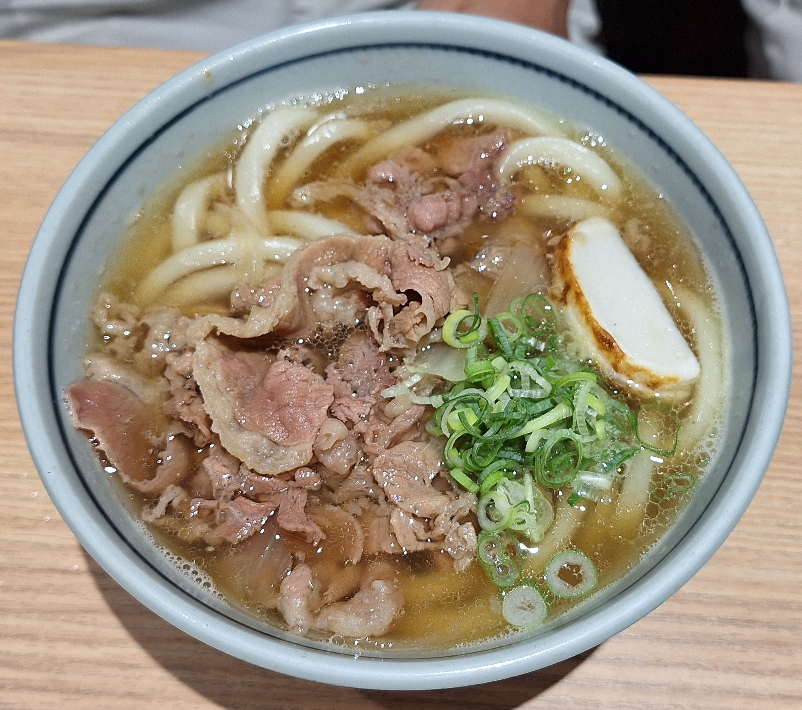
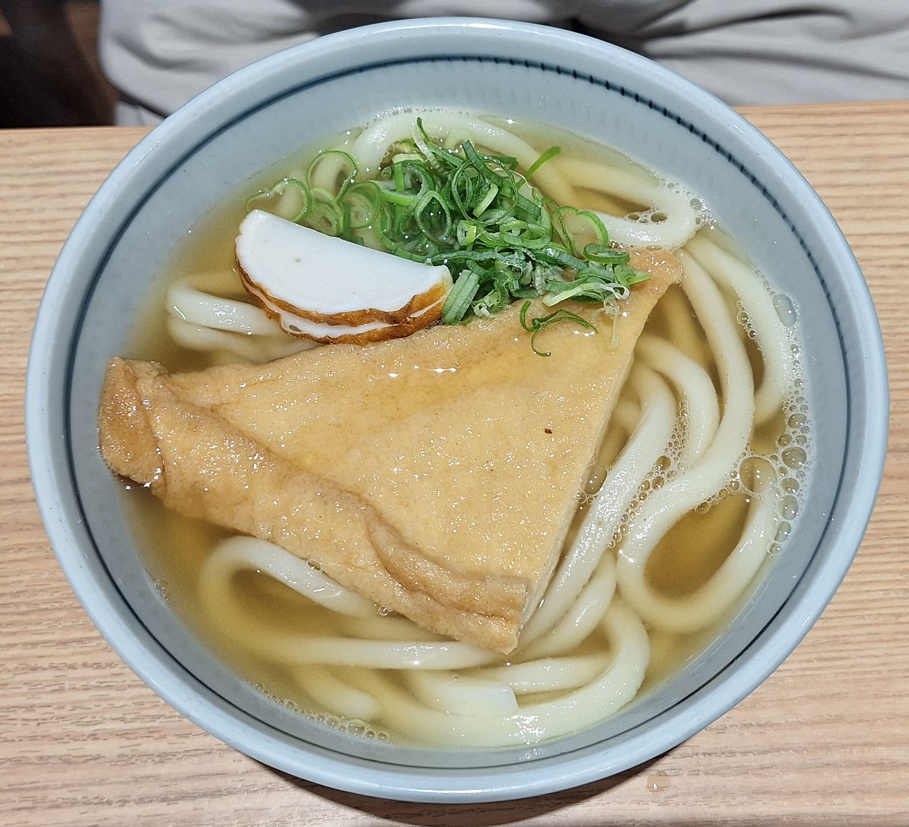
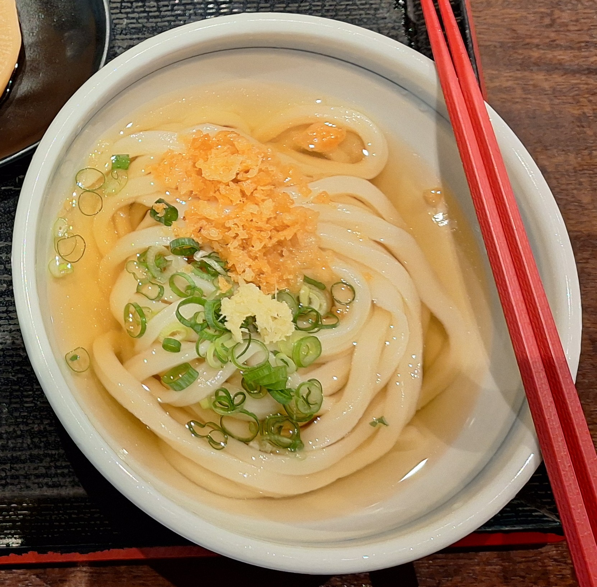
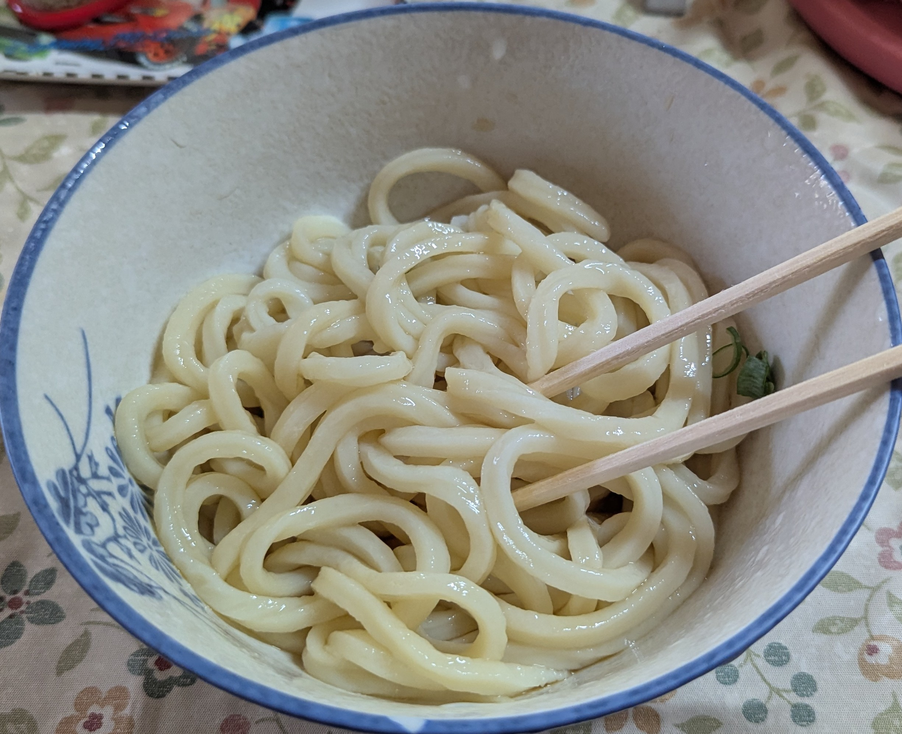
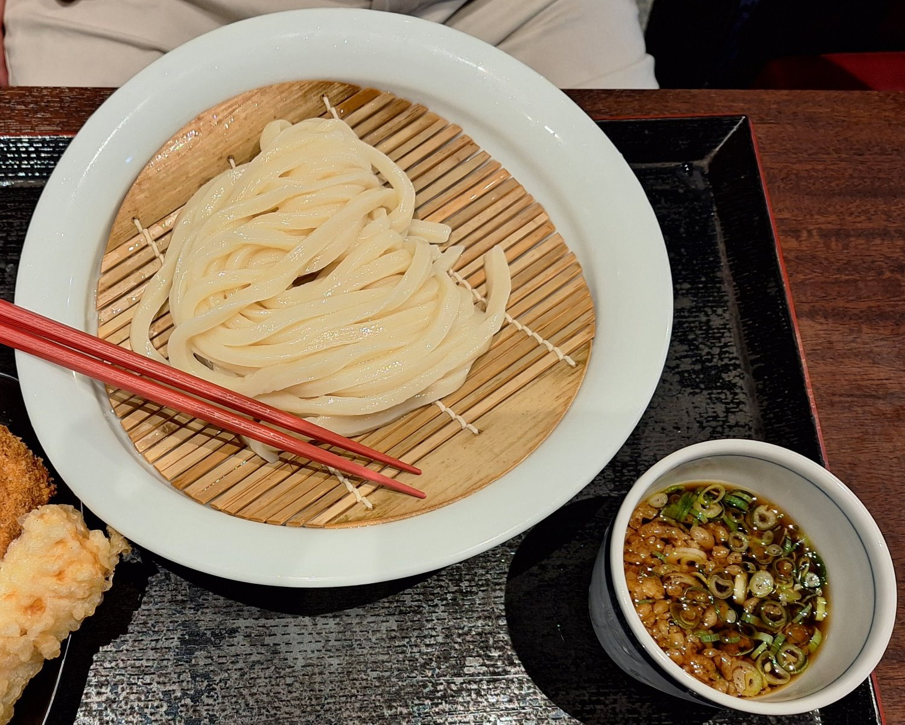
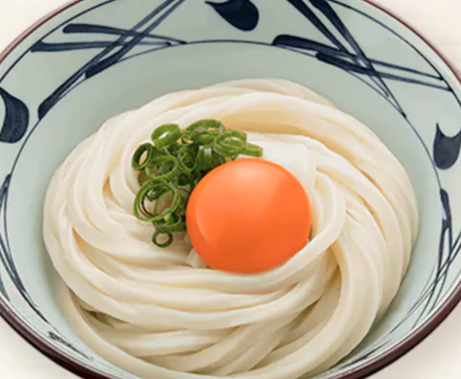
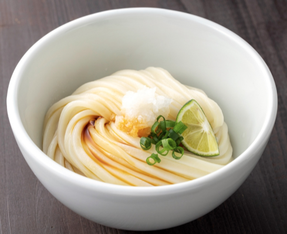

讚岐烏龍麵種類簡介
牛肉烏龍麵(肉うどん)
把煮得甜甜鹹鹹的牛五花肉片擺在烏龍麵上頭。
豆皮烏龍麵(きつねうどん)
烏龍麵配料是煮得甜鹹入味的豆皮。
烏龍湯麵(かけうどん)
煮好的麵條先以冷水冰鎮，再放入麵湯之中。
烏龍乾麵(ぶっかけうどん)
將煮好的麵條放入冷水中冰鎮，淋上濃縮高湯或醬汁享用。
竹簍烏龍麵(ざるうどん)
將煮好的麵條放入冷水中冰鎮，盛裝在竹製容器上桌，夾起麵條沾濃縮高湯享用。
釜揚烏龍麵(釜あげうどん)
將在鍋中煮好的麵條和麵湯一起盛入碗裡。由於不經過冰鎮手續，麵條屬於比較軟的口感。(*圖片來源為網路圖片)
釜玉烏龍麵(釜玉うどん)
在熱湯麵上打顆生蛋。同樣沒冰鎮過，麵條吃起來較軟。(*圖片來源為網路圖片)
醬油烏龍麵(しょうゆうどん)
煮好的麵條以冷水冰鎮過，淋上醬油享用。(*圖片來源為網路圖片)
留言板